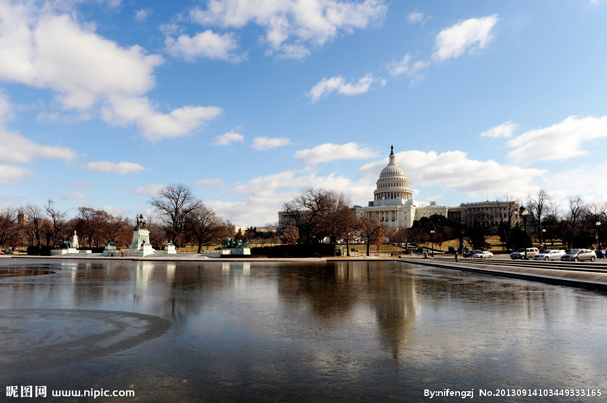
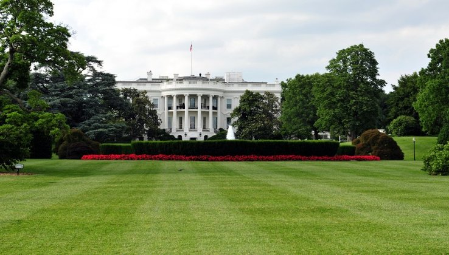
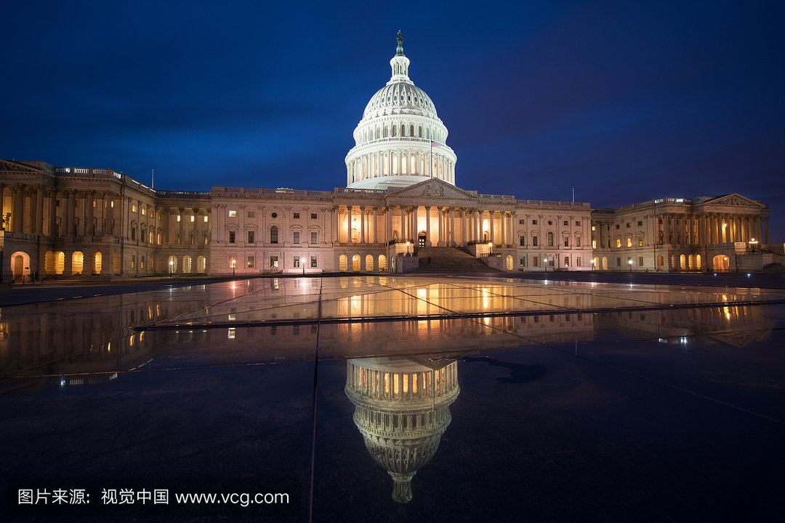
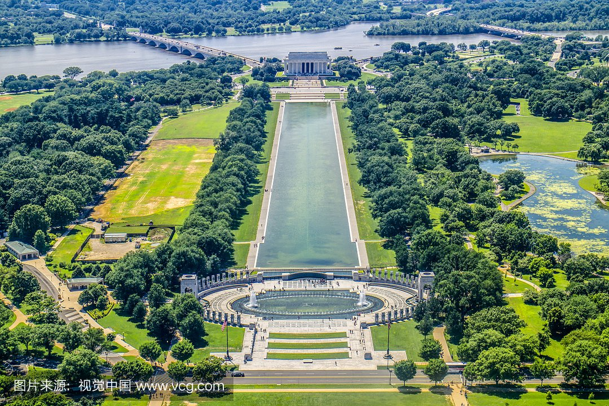
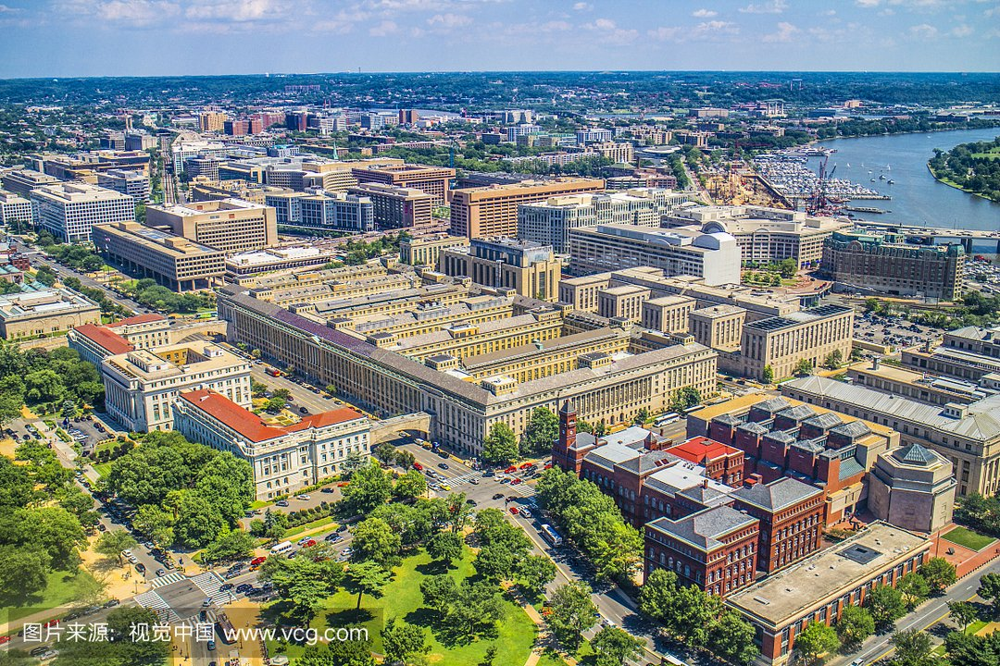
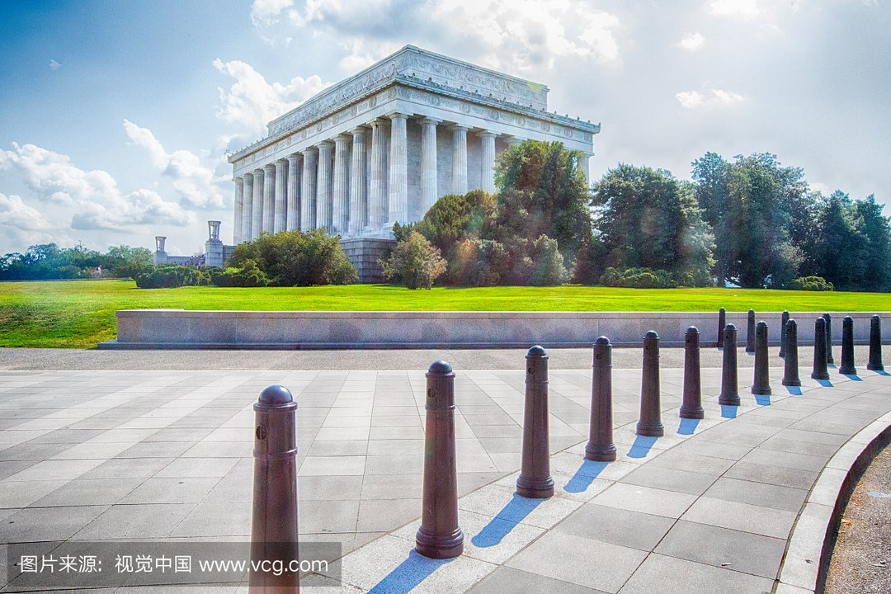
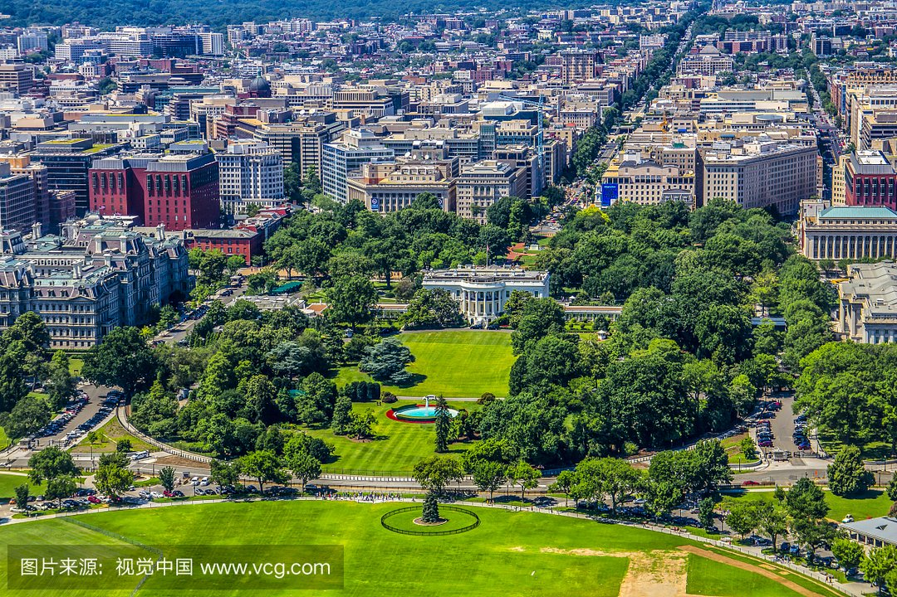

morly旅游网
一说浙华盛顿，你肯定想到了是美国的首都，还有就是有很多时尚潮流的地方，想过去美丽的华盛顿吗？
靠近弗吉尼亚州和马里兰州，位于美国的东北部、中大西洋地区，是1790年作为首都而设置、由美国国会直接管辖的特别行政区划，因此不属于美国的任何一州。
位于北纬38°53.707′，西经77°02.182′。UTC-5 EST 东部标准时区，使用东部标准时间。
市区面积178平方千米。2012年华盛顿哥伦比亚特区人口为64.6 万，位列全美各州第49位，其中58%为黑人。
华盛顿纪念碑
华盛顿纪念碑是为纪念美国首任总统乔治·华盛顿而建造的，位于华盛顿市中心，在国会大厦、林肯纪念堂的轴线上，是一座大理石方尖碑，呈正方形、底部宽22.4米、高169.045米，纪念碑内有50层铁梯，也有70秒到顶端的高速电梯，游人登顶后通过小窗可以眺望华盛顿全城、弗吉尼亚州、马里兰州和波托马克河。
 林肯纪念堂
林肯纪念堂(Lincoln Memorial)是为纪念美国总统林肯而设立的纪念堂，位于华盛顿特区国家广场(National Mall)西侧，阿灵顿纪念大桥(Arlington Memorial Bridge)引道前，与国会和华盛顿纪念碑成一直线。
 美国国会大厦
美国国会大厦是美国国会所在地，位于美国首都华盛顿-哥伦比亚特区(Washington.D.C)。美国人把国会大厦称为Capitol(也叫Congressbuilding)，把它看做是民有、民治、民享政权的最高象征。
 白宫
白宫(英语:The White House)也称为白屋，是美国总统的官邸和办公室。1902年被西奥多·罗斯福总统正式命名为"白宫"。白宫由美国国家公园管理局拥有，是"总统公园"的一部分 。
华盛顿哥伦比亚特区(Washington,District of Columbia/ Washington D. C.)位于美国的东北部，靠近维吉尼亚州和马里兰州。它位于北纬38.913611度，西经-77.013222度，总面积177平方公里，其中有10.16%的地区是水。
华盛顿属温带大陆性气候，四季分明，气温变化相对和缓，全年降水分配均匀。冬季冷凉，微潮，时而偏向寒冷，日最低气温低于0℃的日数有64天;夏季相对炎热潮湿，日最高气温超过90 °F(约合32.2℃)的日数年均有37天，超过100°F(约合37.8°℃)的有1.2天。
内容整理至网络，如有侵权，请联系我们！1255394075@qq.com